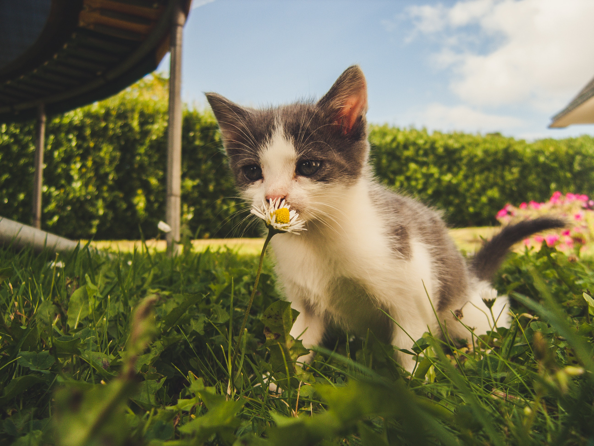

Whether you live with a cuddly lap cat or a quiet introvert who loves their space, having a feline around you can be just as rewarding and benefitial as any other animal friendship.
Some information about cats!

Cats can reduce stress and anxiety.
A cat purring is one of the most comforting sounds in the world.
Sleeping with cats will make you sleep better.
Seeing cats can boost your energy and positive emotions while decreasing negative feelings.
“There are few things in life more heartwarming than to be welcomed by a cat.”